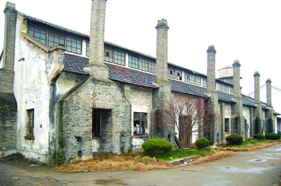

嘉兴市文物保护网 · 市级文物保护单位 · 2014-06-19 · 原文

嘉兴市五金工具厂老厂房位于嘉兴市南湖区凤桥镇新篁社区镇西街123号，据该厂老职工回忆，主要建筑建于1968年，是集体所有制企业。其历史最早可追溯到1954年三大改造时期，由几个小白铁作坊合并成立了铁器生产合作社，1958改名为新篁农具厂，隶属于手工业局，随着生产规模的扩大，1968年建造了这个厂房，隶属于嘉兴二轻局。20世纪80年代改为金属螺丝厂，生产非标准化螺丝，有员工140多名，是当时新篁规模最大的厂。1997年改制后成嘉兴市五金工具厂。现存厂房总占地面积3232平方米，包括厂房2座、仓库2座、水塔一座（已废弃）。厂房为锻工车间，面阔29.28米，进深11.1米。砖木结构，内部由钢质铁架加固。厂房外立面有炼铁的青砖烟囱共14个，其中南北各六个，东西各一个。嘉兴市五金工具厂反映了建国初期嘉兴的工业面貌和工业成就，目前嘉兴这种类型的工厂已为数不多，其厂房有较高的历史和研究价值。2009年公布为嘉兴市级文物保护单位。